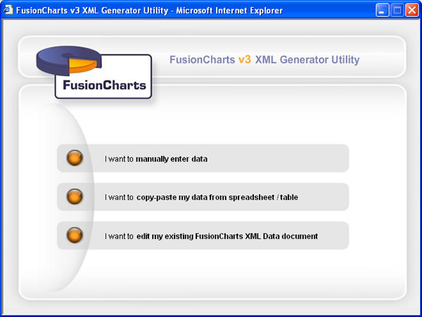
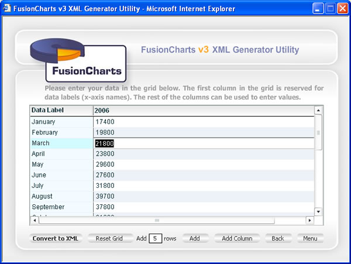
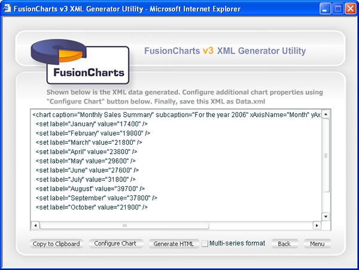
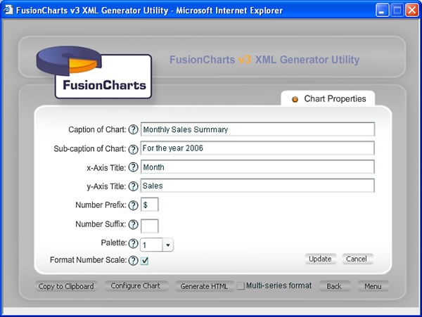
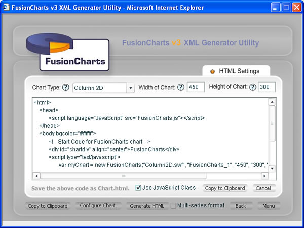
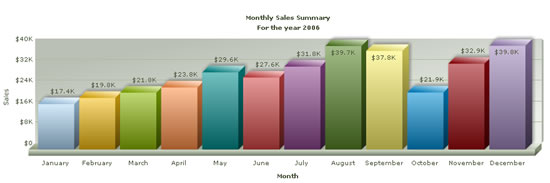

FusionCharts for General Users |
If you do not want to spoil your entire vacation in a binary world to create eye-catching animated charts, FusionCharts is just your kind of thing. It lets you create animated and interactive charts at the Herculean effort of a few mouse clicks. Impress your designer, impress your boss, impress your colleagues....and enjoy the vacation as well. Starting v3, FusionCharts is no more an all-developer tool. We've made it equally accessible to the vacation-enjoying non-programmers, who want to harness its power to create dynamic and "exciting" charts. If you're coming across FusionCharts for the first time, continue reading this para. FusionCharts is a set of files (precisely Adobe SWF files) that take in XML data to render animated charts. XML stands for Extensible Markup Language and is a structured language for data interchange. You do not need to worry about XML (or any of its side effects), as we'll help you keep a safe distance between yourself and this weirdy-XML-thingy. However, to get started and to be on track, you'll still have to remember two things - FusionCharts engine files are called SWF files and it's fuel data files are called XML files. Now thats pretty easy even if you are on vacation. If you're started looking for ways to run, let me tell you how we've tried to make your lives simpler as non-geeks. In FusionCharts v3, we've introduced a new & nifty visual graphical interface to help you build XML data for the charts. This XML data generator utility also helps you build the HTML code for your charts. So, effectively, all you need to do now is punch your data in our interface, click a few buttons and you're done. The utility does all the hard work for you and generates all the necessary code, which you can now copy, paste, run and relish! Your kind of thing, is it? If you've started to feel relieved, let me inspire you with a few screenshots of this small-but-powerful utility. |
|  |
| Starting screen of the utility from where you can select various options |
|  |
| Data Entry Interface |
|  |
| The hard-work of converting your data into XML format done by our utility at just a click of a button. |
|  |
| Visually configuring your chart properties |
|  |
| HTML Code for your chart at the click of a button. NO hand-coding or knowledge of HTML required. |
|  |
| Generated Chart. |
| Now, if you're already excited and hungry for more, let's straight jump from the frying pan into the fire. |